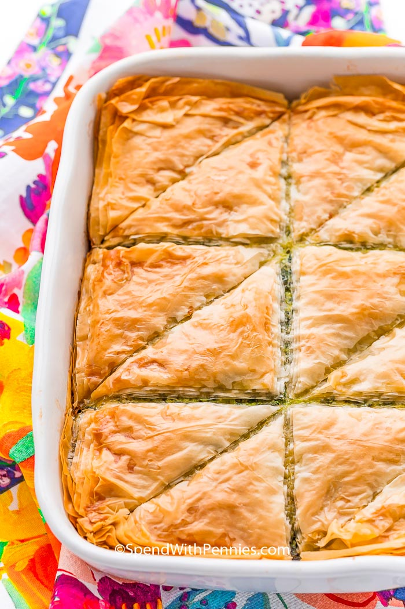

Spanakopita or Greek Spinach Pie
Spanakopita is a traditional Greek dish made with phyllo dough and loaded with a delicious
spinach and feta filling! This comforting savory pie recipe makes a perfect appetizer or side dish!
The whole family will love this incredible spinach
pie thanks to its crispy shell and flavorful cheesy center!

Ingredients
Dough
- 16oz of phyllo dough
- 1 cup of olive oil
Filling
- 20oz of frozen spinach
- 1 yellow onion
- 12oz of feta cheese
- 1 bunch of parsley
- 1/2 cups of parmesan cheese
- 1/2 tsp of kosher salt
- 3 garlic cloves
- 3 large eggs
- 1/2 cup vegetable stock
- 1/4 tsp of red pepper flakes
- 2 tbsp of olive oil
Instructions
- Preheat oven to 325F and brush the bottom and sides of a 9x13-inch baking pan with olive oil.
- Roll out the thawed phyllo dough and cover the stack with a lightly damp paper towel to keep the
dough from drying out. If dough is a lot longer than
your baking dish, cut off the end so you don't have a lot of excess dough.
- Place two pieces of dough in the bottom of the pan and brush them liberally with olive oil. Repeat this layering process until just 8 sheets of dough remain.
- Combine the filling ingredients in a large mixing bowl then spread the mixture out on top of the dough in the pan.
- Add the rest of the dough, brushing with olive oil every two layers as before, brushing the top layer with olive oil and adding a few drops of water to the top.
- Use a large sharp knife to cut through the top layer of dough (but not all the way to the bottom) in whatever size you want the end pieces to be.
- Bake for 1 hour or until the top layer is a nice flaky golden brown. Finish cutting the dish into pieces and serve.
Recipe Notes:
Dough:The dough will be frozen and will need to thaw. For best results,
refrigerate 12 hours before using it.
Spinach:Thaw spinach completely and squeeze
out as much water as possible
Prepare in Advance:Prep fully and store in the fridge for up to 1 day before baking.
Storage:Store leftovers in an airtight container in the refrigerator for up to 2 days.
Nutruition Facts
Calories: 309, Carbohydrates: 25g, Protein: 15g, Fat: 17g, Saturated Fat: 8g, Cholesterol: 75mg, Sodium: 851mg, Potassium: 278mg, Fiber: 2g, Sugar: 2g, Vitamin A: 6230IU, Vitamin C: 10mg, Calcium: 369mg, Iron: 3mg